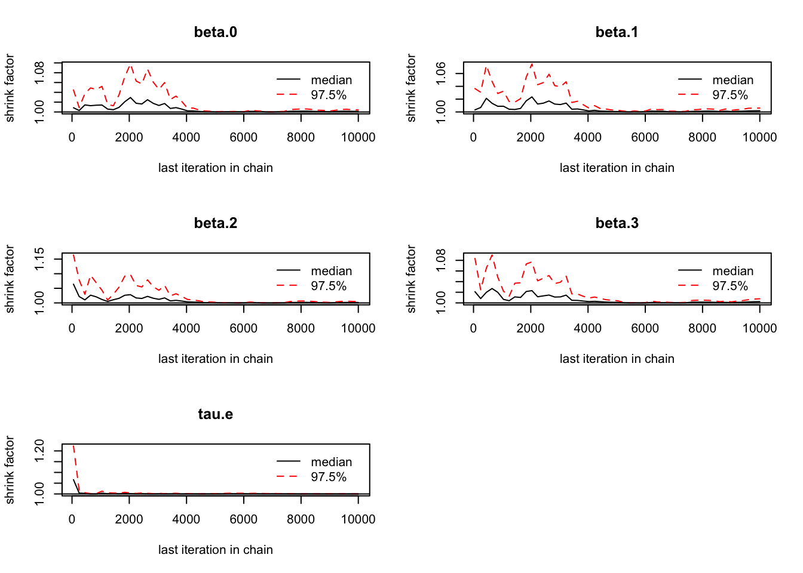

Bayesian statistics assignments day 4, regression, mediation and moderation
Wouter van Amsterdam
2018-05-03
Last updated: 2018-05-04
Code version: fc4400b
library(dplyr)
library(data.table)
library(magrittr)
library(purrr)
library(here) # for tracking working directory
library(ggplot2)
library(epistats)
library(broom)
library(rjags)Day 4
Linear regression
# This code runs a Bayesian linear regression analysis using the package rjags.
# To start, import the data set LinearRegressionCubic.csv.
MyData <- read.csv(file=here("data", "LinearRegressionCubic.csv"), header=TRUE, sep=",")
N<-dim(MyData)[1]
str(MyData)'data.frame': 12 obs. of 2 variables:
$ X: num 3.941 3.241 6.039 0.893 4.874 ...
$ Y: num 4.37 3.9 5.33 3.32 5.05 ...Define priors and likelihood in bugs language
# writing out the .txt file with the model
modelstring <- as.character("
model{
beta.0 ~ dnorm(0, .001); # prior for the intercept
beta.1 ~ dnorm(0, .001); # prior for b1
beta.2 ~ dnorm(0, .001); # prior for b2
beta.3 ~ dnorm(0, .001); # prior for b3
tau.e ~ dgamma(.5, .5); # prior for the error precision for Y
sigma2.e<-1/tau.e
sigma.e<-sqrt(sigma2.e)
# Conditional probability of the data
# A regression model
for(i in 1:N){
y.prime[i] <- beta.0 + beta.1*x[i]+ beta.2*x[i]*x[i]+ beta.2*x[i]*x[i]*x[i]; # predicted value of Y
y[i] ~ dnorm(y.prime[i], tau.e); # conditional distribution of y
}
}
") # closes the model as string
model.file.name <- "bayes_4_Linear Regression.txt"
write(x=modelstring, file=here("analysis", model.file.name), append=FALSE)Compile the model and run simulations
library('rjags')
jags <- jags.model(here("analysis", model.file.name),
data = list('x' = MyData$X,
'y' = MyData$Y,
'N' = N),
n.chains = 3)Compiling model graph
Resolving undeclared variables
Allocating nodes
Graph information:
Observed stochastic nodes: 12
Unobserved stochastic nodes: 5
Total graph size: 84
Initializing modelout=coda.samples(jags, variable.names=c("beta.0","beta.1","beta.2", "beta.3", "tau.e"),
n.iter=100)
summary(out)
Iterations = 1:100
Thinning interval = 1
Number of chains = 3
Sample size per chain = 100
1. Empirical mean and standard deviation for each variable,
plus standard error of the mean:
Mean SD Naive SE Time-series SE
beta.0 3.217120 0.318557 0.0183919 0.0448638
beta.1 0.189071 0.132688 0.0076607 0.0301716
beta.2 0.004321 0.002559 0.0001477 0.0004866
beta.3 3.797530 33.625335 1.9413596 1.9275900
tau.e 4.928648 2.105195 0.1215435 0.1406338
2. Quantiles for each variable:
2.5% 25% 50% 75% 97.5%
beta.0 2.634800 2.989520 3.196389 3.422728 3.877031
beta.1 -0.063137 0.090952 0.196015 0.297135 0.409774
beta.2 -0.000527 0.002329 0.004471 0.006268 0.009365
beta.3 -59.184523 -20.866721 4.112455 26.911716 74.310320
tau.e 1.556246 3.363222 4.657906 6.172727 9.749661Check model conversion
# Coda
library(coda)
model.as.mcmc.list <- as.mcmc.list(out)
gelman.diag(model.as.mcmc.list)Potential scale reduction factors:
Point est. Upper C.I.
beta.0 1.17 1.51
beta.1 1.25 1.72
beta.2 1.11 1.36
beta.3 1.00 1.01
tau.e 1.01 1.04
Multivariate psrf
1.17gelman.plot(model.as.mcmc.list)plot(model.as.mcmc.list, trace=TRUE, density=FALSE)Gelman numbers are above 1.1
Does not look like conversion, run additional samples
# Running additional iterations
out2=coda.samples(jags, variable.names=c("beta.0","beta.1","beta.2", "beta.3", "tau.e"),
n.iter=2000)
model.as.mcmc.list <- as.mcmc.list(out2)
gelman.diag(model.as.mcmc.list)Potential scale reduction factors:
Point est. Upper C.I.
beta.0 1.01 1.03
beta.1 1.02 1.04
beta.2 1.02 1.05
beta.3 1.00 1.00
tau.e 1.00 1.00
Multivariate psrf
1.01gelman.plot(model.as.mcmc.list)plot(model.as.mcmc.list, trace=TRUE, density=FALSE)summary(out2)
Iterations = 101:2100
Thinning interval = 1
Number of chains = 3
Sample size per chain = 2000
1. Empirical mean and standard deviation for each variable,
plus standard error of the mean:
Mean SD Naive SE Time-series SE
beta.0 3.22540 0.373322 4.820e-03 0.0220337
beta.1 0.19253 0.172742 2.230e-03 0.0126735
beta.2 0.00411 0.003203 4.135e-05 0.0002026
beta.3 -0.03474 31.495551 4.066e-01 0.4118185
tau.e 4.91649 2.167285 2.798e-02 0.0449229
2. Quantiles for each variable:
2.5% 25% 50% 75% 97.5%
beta.0 2.486635 2.989651 3.227075 3.451927 3.97486
beta.1 -0.162704 0.083606 0.195937 0.306711 0.52513
beta.2 -0.001985 0.002026 0.004055 0.006053 0.01078
beta.3 -61.250466 -21.759906 0.011697 21.204839 62.39244
tau.e 1.684106 3.336975 4.575266 6.150341 9.94270Looks like conversions after about 2000 iterations
Let’s burn in with 2000 and then draw samples
jags <- jags.model(here("analysis", model.file.name),
data = list('x' = MyData$X,
'y' = MyData$Y,
'N' = N),
n.chains = 3)Compiling model graph
Resolving undeclared variables
Allocating nodes
Graph information:
Observed stochastic nodes: 12
Unobserved stochastic nodes: 5
Total graph size: 84
Initializing modelupdate(jags, 2000)
out3=coda.samples(jags, variable.names=c("beta.0","beta.1","beta.2", "beta.3", "tau.e"),
n.iter=2000)
model.as.mcmc.list <- as.mcmc.list(out3)
plot(out3, density = F)Conversion is still not perfect.
Let’s center X
jags_scaled <- jags.model(here("analysis", model.file.name),
data = list('x' = as.numeric(scale(MyData$X, center = T, scale = T)),
'y' = MyData$Y,
'N' = N),
n.chains = 3)Compiling model graph
Resolving undeclared variables
Allocating nodes
Graph information:
Observed stochastic nodes: 12
Unobserved stochastic nodes: 5
Total graph size: 84
Initializing modelupdate(jags_scaled, 2000)
out4=coda.samples(jags_scaled, variable.names=c("beta.0","beta.1","beta.2", "beta.3", "tau.e"),
n.iter=2000)
model.as.mcmc.list_scaled <- as.mcmc.list(out4)
plot(out4, density = F)
Looks better
# After the chains have converged
# combine draws from chains
draws.to.analyze.as.one.list <-
as.mcmc(do.call(rbind,model.as.mcmc.list_scaled))
#obtain mean, medians, and quantiles
summary.stats <- summary(draws.to.analyze.as.one.list)
summary.stats
Iterations = 1:6000
Thinning interval = 1
Number of chains = 1
Sample size per chain = 6000
1. Empirical mean and standard deviation for each variable,
plus standard error of the mean:
Mean SD Naive SE Time-series SE
beta.0 4.10876 0.1875 0.002420 0.004515
beta.1 0.58233 0.2701 0.003487 0.008215
beta.2 0.09308 0.1065 0.001375 0.003307
beta.3 -0.61803 31.5349 0.407113 0.407113
tau.e 4.50875 2.0413 0.026353 0.035097
2. Quantiles for each variable:
2.5% 25% 50% 75% 97.5%
beta.0 3.73255 3.99093 4.1093 4.2246 4.4825
beta.1 0.04591 0.41113 0.5792 0.7546 1.1112
beta.2 -0.12030 0.02414 0.0942 0.1613 0.3061
beta.3 -62.72616 -21.82877 -0.2710 20.7755 60.0552
tau.e 1.48331 2.99429 4.2150 5.6576 9.3417#obtain highest-posterior density interval
HPD.interval <- HPDinterval(draws.to.analyze.as.one.list,
prob=.95)
HPD.interval lower upper
beta.0 3.73256527 4.4826107
beta.1 0.04850974 1.1133041
beta.2 -0.13216101 0.2897348
beta.3 -62.28888504 60.3325574
tau.e 1.20151586 8.5582099
attr(,"Probability")
[1] 0.95No indication of cubic effect, only linear effect
Mediation analysis
Load data and define in buggs language
# This code runs a Bayesian mediation analysis using the package rjags.
# To start, import the data set waterconsumption.csv.
MyData <- read.csv(file=here("data", "waterconsumption.csv"), header=TRUE, sep=",")
N<-dim(MyData)[1]
modelstring <- as.character("
model {
############################################
# Prior distributions
############################################
beta.0.m ~ dnorm(1, .001); # prior for the intercept for M
beta.0.y ~ dnorm(1, .001); # prior for the intercept for Y
a ~ dnorm(5, .11); # prior for a
b ~ dnorm(5, .11); # prior for b
cp ~ dnorm(0, .11); # prior for c?
tau.e.M ~ dgamma(.5, .5); # prior for the error precision for M
tau.e.Y ~ dgamma(.5, .5); # prior for the error precision for Y
ab <-a*b
############################################
# Conditional probability of the data
# A regression model
############################################
for(i in 1:N){
m.prime[i] <- beta.0.m + a*(x[i]-70.18); # predicted value of M, predictor is mean-centered
y.prime[i] <- beta.0.y + cp*(x[i]-70.18) + b*(m[i]-3.06) ; # predicted value of Y, predictor is mean-centered
m[i] ~ dnorm(m.prime[i], tau.e.M); # conditional distribution of m
y[i] ~ dnorm(y.prime[i], tau.e.Y); # conditional distribution of y
}
}
") # closes the model as string
#############################################################################################################################
# Write out the BUGS code to a file
#############################################################################################################################
model.file.name <- here("analysis", "bayes_4_Single Mediator Model.txt")
write(x=modelstring, file=model.file.name, append=FALSE)Compile model and sample
library(rjags)
mediation.model <- jags.model(model.file.name,
data = list('x' = MyData$x,
'm' = MyData$m,
'y' = MyData$y,
'N' = N),
n.chains = 3)Compiling model graph
Resolving undeclared variables
Allocating nodes
Graph information:
Observed stochastic nodes: 100
Unobserved stochastic nodes: 7
Total graph size: 219
Initializing modelout=coda.samples(mediation.model,
variable.names=c("a", "ab","b", "cp", "beta.0.m",
"beta.0.y", "tau.e.M", "tau.e.Y"),
n.iter=10000)
summary(out)
Iterations = 1:10000
Thinning interval = 1
Number of chains = 3
Sample size per chain = 10000
1. Empirical mean and standard deviation for each variable,
plus standard error of the mean:
Mean SD Naive SE Time-series SE
a 0.3458 0.1253 0.0007233 0.0007234
ab 0.1603 0.0799 0.0004613 0.0004894
b 0.4628 0.1479 0.0008537 0.0009894
beta.0.m 3.0606 0.1410 0.0008138 0.0008180
beta.0.y 3.2390 0.1426 0.0008232 0.0008232
cp 0.2037 0.1352 0.0007806 0.0009169
tau.e.M 1.0530 0.2121 0.0012247 0.0012761
tau.e.Y 1.0315 0.2093 0.0012086 0.0012775
2. Quantiles for each variable:
2.5% 25% 50% 75% 97.5%
a 0.09854 0.2617 0.3457 0.4296 0.5933
ab 0.03034 0.1027 0.1517 0.2081 0.3388
b 0.17349 0.3642 0.4618 0.5599 0.7577
beta.0.m 2.78562 2.9664 3.0607 3.1553 3.3378
beta.0.y 2.95769 3.1427 3.2388 3.3337 3.5162
cp -0.06492 0.1131 0.2038 0.2939 0.4695
tau.e.M 0.67752 0.9014 1.0398 1.1869 1.5088
tau.e.Y 0.66326 0.8852 1.0168 1.1628 1.4809Plot convergence and posterior distributions
library(coda)
model.as.mcmc.list <- as.mcmc.list(out)
draws.to.analyze.as.one.list <-
as.mcmc(do.call(rbind,model.as.mcmc.list))
summary(draws.to.analyze.as.one.list)
Iterations = 1:30000
Thinning interval = 1
Number of chains = 1
Sample size per chain = 30000
1. Empirical mean and standard deviation for each variable,
plus standard error of the mean:
Mean SD Naive SE Time-series SE
a 0.3458 0.1253 0.0007233 0.0007233
ab 0.1603 0.0799 0.0004613 0.0004904
b 0.4628 0.1479 0.0008537 0.0009836
beta.0.m 3.0606 0.1410 0.0008138 0.0008138
beta.0.y 3.2390 0.1426 0.0008232 0.0008232
cp 0.2037 0.1352 0.0007806 0.0009289
tau.e.M 1.0530 0.2121 0.0012247 0.0012940
tau.e.Y 1.0315 0.2093 0.0012086 0.0012775
2. Quantiles for each variable:
2.5% 25% 50% 75% 97.5%
a 0.09854 0.2617 0.3457 0.4296 0.5933
ab 0.03034 0.1027 0.1517 0.2081 0.3388
b 0.17349 0.3642 0.4618 0.5599 0.7577
beta.0.m 2.78562 2.9664 3.0607 3.1553 3.3378
beta.0.y 2.95769 3.1427 3.2388 3.3337 3.5162
cp -0.06492 0.1131 0.2038 0.2939 0.4695
tau.e.M 0.67752 0.9014 1.0398 1.1869 1.5088
tau.e.Y 0.66326 0.8852 1.0168 1.1628 1.4809# diagnostics of convergence
gelman.diag(model.as.mcmc.list)Potential scale reduction factors:
Point est. Upper C.I.
a 1 1
ab 1 1
b 1 1
beta.0.m 1 1
beta.0.y 1 1
cp 1 1
tau.e.M 1 1
tau.e.Y 1 1
Multivariate psrf
1gelman.plot(model.as.mcmc.list)
plot(model.as.mcmc.list, trace=TRUE, density=FALSE)plot(model.as.mcmc.list, trace=FALSE, density=TRUE)No signs of non-convergence
For parameters a, ab, and b, we have a clear sign that they are greater than 0 For cp, a parameter value of 0 false within the 95% credible interval
There is a clear indication of mediation, and not of a direct effect
# running additional iterations
out2=coda.samples(mediation.model,
variable.names=c("a", "ab","b", "cp", "beta.0.m",
"beta.0.y", "tau.e.M", "tau.e.Y"),
n.iter=10000)
model.as.mcmc.list <- as.mcmc.list(out2)
draws.to.analyze.as.one.list <-
as.mcmc(do.call(rbind,model.as.mcmc.list))
#obtain mean, medians, and quantiles
summary.stats <- summary(draws.to.analyze.as.one.list)
summary.stats
Iterations = 1:30000
Thinning interval = 1
Number of chains = 1
Sample size per chain = 30000
1. Empirical mean and standard deviation for each variable,
plus standard error of the mean:
Mean SD Naive SE Time-series SE
a 0.3459 0.12450 0.0007188 0.0007188
ab 0.1594 0.07972 0.0004602 0.0004919
b 0.4608 0.14983 0.0008651 0.0009959
beta.0.m 3.0609 0.14103 0.0008143 0.0008143
beta.0.y 3.2398 0.14269 0.0008238 0.0008238
cp 0.2048 0.13542 0.0007818 0.0008941
tau.e.M 1.0503 0.21182 0.0012229 0.0012612
tau.e.Y 1.0296 0.20985 0.0012115 0.0012827
2. Quantiles for each variable:
2.5% 25% 50% 75% 97.5%
a 0.10131 0.2627 0.3465 0.4291 0.5903
ab 0.03031 0.1023 0.1508 0.2061 0.3404
b 0.16696 0.3612 0.4603 0.5596 0.7573
beta.0.m 2.78310 2.9681 3.0602 3.1542 3.3392
beta.0.y 2.95726 3.1448 3.2417 3.3348 3.5200
cp -0.06298 0.1144 0.2057 0.2962 0.4702
tau.e.M 0.67845 0.9010 1.0364 1.1852 1.5021
tau.e.Y 0.65867 0.8823 1.0168 1.1636 1.4772#obtain highest-posterior density interval
HPD.interval <- HPDinterval(draws.to.analyze.as.one.list,
prob=.95)
HPD.interval lower upper
a 0.09869551 0.5858006
ab 0.01585411 0.3171830
b 0.16885314 0.7585184
beta.0.m 2.78864073 3.3438283
beta.0.y 2.96150563 3.5230678
cp -0.06320280 0.4699538
tau.e.M 0.66313290 1.4780816
tau.e.Y 0.63099396 1.4432357
attr(,"Probability")
[1] 0.95Repeat with different priors:
First center predictors in the data (X and M) without scaling to unit variance
scale2 <- function(x, ...) as.numeric(scale(x, ...))
df <- MyData %>%
mutate_at(vars(x, m), scale2, center = T, scale = F)Define 3 priors
- Uniform [0,3] for both a & b
- Uniform [-3,3] for both a & b
- Normal (0, prec=.01) for both a & b
model_string_upos <- as.character("
model {
############################################
# Prior distributions
############################################
beta.0.m ~ dnorm(1, .001); # prior for the intercept for M
beta.0.y ~ dnorm(1, .001); # prior for the intercept for Y
a ~ dunif(0, 3); # prior for a
b ~ dunif(0, 3); # prior for b
cp ~ dnorm(0, .11); # prior for c?
tau.e.M ~ dgamma(.5, .5); # prior for the error precision for M
tau.e.Y ~ dgamma(.5, .5); # prior for the error precision for Y
ab <-a*b
############################################
# Conditional probability of the data
# A regression model
############################################
for(i in 1:N){
m.prime[i] <- beta.0.m + a*(x[i]); # predicted value of M, predictor is mean-centered in R
y.prime[i] <- beta.0.y + cp*(x[i]) + b*(m[i]) ; # predicted value of Y, predictor is mean-centered in R
m[i] ~ dnorm(m.prime[i], tau.e.M); # conditional distribution of m
y[i] ~ dnorm(y.prime[i], tau.e.Y); # conditional distribution of y
}
}
") # closes the model as string
#############################################################################################################################
# Write out the BUGS code to a file
#############################################################################################################################
model_file_upos <- here("analysis", "bayes_4_mediation_uniform_positive.txt")
write(x=model_string_upos, file=model_file_upos, append=FALSE)
mediation.model_upos <- jags.model(model_file_upos,
data = list('x' = df$x,
'm' = df$m,
'y' = df$y,
'N' = N),
n.chains = 3)Compiling model graph
Resolving undeclared variables
Allocating nodes
Graph information:
Observed stochastic nodes: 100
Unobserved stochastic nodes: 7
Total graph size: 206
Initializing modelmodel_string_unif <- as.character("
model {
############################################
# Prior distributions
############################################
beta.0.m ~ dnorm(1, .001); # prior for the intercept for M
beta.0.y ~ dnorm(1, .001); # prior for the intercept for Y
a ~ dunif(-3, 3); # prior for a
b ~ dunif(-3, 3); # prior for b
cp ~ dnorm(0, .11); # prior for c?
tau.e.M ~ dgamma(.5, .5); # prior for the error precision for M
tau.e.Y ~ dgamma(.5, .5); # prior for the error precision for Y
ab <-a*b
############################################
# Conditional probability of the data
# A regression model
############################################
for(i in 1:N){
m.prime[i] <- beta.0.m + a*(x[i]); # predicted value of M, predictor is mean-centered in R
y.prime[i] <- beta.0.y + cp*(x[i]) + b*(m[i]) ; # predicted value of Y, predictor is mean-centered in R
m[i] ~ dnorm(m.prime[i], tau.e.M); # conditional distribution of m
y[i] ~ dnorm(y.prime[i], tau.e.Y); # conditional distribution of y
}
}
") # closes the model as string
#############################################################################################################################
# Write out the BUGS code to a file
#############################################################################################################################
model_file_unif <- here("analysis", "bayes_4_mediation_uniform.txt")
write(x=model_string_unif, file=model_file_unif, append=FALSE)
mediation.model_unif <- jags.model(model_file_unif,
data = list('x' = df$x,
'm' = df$m,
'y' = df$y,
'N' = N),
n.chains = 3)Compiling model graph
Resolving undeclared variables
Allocating nodes
Graph information:
Observed stochastic nodes: 100
Unobserved stochastic nodes: 7
Total graph size: 207
Initializing modelmodel_string_norm <- as.character("
model {
############################################
# Prior distributions
############################################
beta.0.m ~ dnorm(1, .001); # prior for the intercept for M
beta.0.y ~ dnorm(1, .001); # prior for the intercept for Y
a ~ dnorm(0, .01); # prior for a
b ~ dnorm(0, .01); # prior for b
cp ~ dnorm(0, .11); # prior for c?
tau.e.M ~ dgamma(.5, .5); # prior for the error precision for M
tau.e.Y ~ dgamma(.5, .5); # prior for the error precision for Y
ab <-a*b
############################################
# Conditional probability of the data
# A regression model
############################################
for(i in 1:N){
m.prime[i] <- beta.0.m + a*(x[i]); # predicted value of M, predictor is mean-centered in R
y.prime[i] <- beta.0.y + cp*(x[i]) + b*(m[i]) ; # predicted value of Y, predictor is mean-centered in R
m[i] ~ dnorm(m.prime[i], tau.e.M); # conditional distribution of m
y[i] ~ dnorm(y.prime[i], tau.e.Y); # conditional distribution of y
}
}
") # closes the model as string
#############################################################################################################################
# Write out the BUGS code to a file
#############################################################################################################################
model_file_norm <- here("analysis", "bayes_4_mediation_normal.txt")
write(x=model_string_norm, file=model_file_norm, append=FALSE)
mediation.model_norm <- jags.model(model_file_norm,
data = list('x' = df$x,
'm' = df$m,
'y' = df$y,
'N' = N),
n.chains = 3)Compiling model graph
Resolving undeclared variables
Allocating nodes
Graph information:
Observed stochastic nodes: 100
Unobserved stochastic nodes: 7
Total graph size: 206
Initializing modelCombine models in a data frame for easy manipulation
models <- data.frame(model_prior = c("uniform_positive", "uniform", "normal"))
models %<>%
mutate(model = list(uniform_positive = mediation.model_upos,
uniform = mediation.model_unif,
normal = mediation.model_norm))Burnin 10000 and then sample 10000
nburnin = 10000
nsample = 10000
params = c("a", "ab","b", "cp", "beta.0.m",
"beta.0.y", "tau.e.M", "tau.e.Y")
burnin_and_sample <- function(model, params, nburnin, nsamples) {
update(model, nburnin)
samples = coda.samples(model, n.iter = nsamples, variable.names = params)
return(samples)
}
models %<>%
mutate(samples = map(model,
~burnin_and_sample(.x, params, nburnin = nburnin, nsamples = nsample)))Check convergence for the samples
plot(models$samples[[1]], density = F)
Looks good
plot(models$samples[[2]], density = F)Looks good
plot(models$samples[[3]], density = F)Looks good
Let’s grab the HDR confidence intervals for the parameters
hpds <- models$samples %>%
# map(samples_to_mcmc) %>%
map(HPDinterval) %>%
map(as.data.frame) %>%
map(~mutate(.x, parameter = params)) %>%
rbindlist(idcol = "model")
hpds model lower upper lower.1 upper.1
1: uniform_positive 0.105621217 0.5853159 0.09951715 0.5882949
2: uniform_positive 0.009077496 0.2979239 0.01596196 0.3098036
3: uniform_positive 0.148044297 0.7241933 0.16815155 0.7581877
4: uniform_positive -0.274828652 0.2704848 -0.28678138 0.2706222
5: uniform_positive 2.947682186 3.5054355 2.96366901 3.5277247
6: uniform_positive -0.057646591 0.4731576 -0.05976687 0.4695230
7: uniform_positive 0.673382796 1.4964816 0.64504045 1.4645014
8: uniform_positive 0.643617462 1.4631991 0.62586650 1.4410677
9: uniform 0.093327986 0.5873783 0.08746387 0.5737137
10: uniform 0.012415448 0.3073995 0.01265630 0.3032819
11: uniform 0.150877153 0.7262261 0.16267329 0.7370952
12: uniform -0.278442146 0.2703357 -0.28071318 0.2712802
13: uniform 2.960760205 3.5212219 2.95945640 3.5179271
14: uniform -0.044674647 0.4819173 -0.05270166 0.4807385
15: uniform 0.655411786 1.4710077 0.66090780 1.4745598
16: uniform 0.641273459 1.4446559 0.64781819 1.4554341
17: normal 0.094782095 0.5869782 0.08968757 0.5789416
18: normal 0.017202135 0.3082296 0.01557243 0.3063304
19: normal 0.149999540 0.7349633 0.17079038 0.7475425
20: normal -0.285031471 0.2756471 -0.27902512 0.2741271
21: normal 2.945829451 3.5073682 2.96213844 3.5230771
22: normal -0.051708550 0.4778827 -0.06635080 0.4707546
23: normal 0.657962326 1.4701043 0.65807944 1.4707823
24: normal 0.630610807 1.4410640 0.64807304 1.4544943
model lower upper lower.1 upper.1
lower.2 upper.2 parameter
1: 0.09451316 0.5763615 a
2: 0.01832552 0.3029132 ab
3: 0.15712048 0.7370966 b
4: -0.27118554 0.2788492 cp
5: 2.95054403 3.5042995 beta.0.m
6: -0.06560117 0.4652729 beta.0.y
7: 0.67098776 1.4826153 tau.e.M
8: 0.63628954 1.4498356 tau.e.Y
9: 0.09354860 0.5902558 a
10: 0.01720291 0.3136825 ab
11: 0.15703099 0.7294611 b
12: -0.27377233 0.2780746 cp
13: 2.97847205 3.5354221 beta.0.m
14: -0.05962933 0.4679094 beta.0.y
15: 0.64819723 1.4791892 tau.e.M
16: 0.63702419 1.4485782 tau.e.Y
17: 0.08425099 0.5810194 a
18: 0.01289972 0.3106834 ab
19: 0.16087310 0.7447107 b
20: -0.27163583 0.2767797 cp
21: 2.97326566 3.5294494 beta.0.m
22: -0.05353831 0.4774362 beta.0.y
23: 0.66402691 1.4826502 tau.e.M
24: 0.64600570 1.4597588 tau.e.Y
lower.2 upper.2 parameterPlot parameter credible intervals
hpds %>%
ggplot(aes(ymin = lower, ymax = upper, x = parameter, col = model)) +
geom_errorbar(position = "dodge", width = .25) +
coord_flip() + theme_minimal()No real differences for the different priors
Specifically, none of the confidence bounds for a and b overlap 0, so uniform positive did not enforce this too much
Moderation analysis
Load data
# This code runs a Bayesian moderation analysis using the package rjags.
# To start, import the data set Moderationdata.csv.
MyData <- read.csv(file=here("data", "Moderationdata.csv"), header=TRUE, sep=",")
N<-dim(MyData)[1]Define model and compile
# writing out the .bug file with the model
modelstring <- as.character("
model{
beta.0 ~ dnorm(0, .001); # prior for the intercept
beta.1 ~ dnorm(0, .001); # prior for regression coefficient for x
beta.2 ~ dnorm(0, .001); # prior for regression coefficient for z
beta.3 ~ dnorm(0, .001); # prior for regression coefficient for intercation xz
tau.e ~ dgamma(.5, .5); # prior for the error precision for Y
sigma2.e<-1/tau.e
sigma.e<-sqrt(sigma2.e)
# Conditional probability of the data
# A regression model
for(i in 1:N){
y.prime[i] <- beta.0 + beta.1*x[i] + beta.2*z[i] + beta.3*x[i]*z[i] ; # predicted value of Y
y[i] ~ dnorm(y.prime[i], tau.e); # conditional distribution of y
}
}
") # closes the model as string
model.file.name <- here("analysis", "bayes_4_Moderation.txt")
write(x=modelstring, file=model.file.name, append=FALSE)
library('rjags')
jags <- jags.model(model.file.name,
data = list('x' = MyData$x,
'z' = MyData$z,
'y' = MyData$y,
'N' = N),
n.chains = 3)Compiling model graph
Resolving undeclared variables
Allocating nodes
Graph information:
Observed stochastic nodes: 40
Unobserved stochastic nodes: 5
Total graph size: 144
Initializing modelRun some samples
out=coda.samples(jags, variable.names=c("beta.0","beta.1","beta.2", "beta.3", "tau.e"),
n.iter=10000)
summary(out)
Iterations = 1:10000
Thinning interval = 1
Number of chains = 3
Sample size per chain = 10000
1. Empirical mean and standard deviation for each variable,
plus standard error of the mean:
Mean SD Naive SE Time-series SE
beta.0 -0.4099 0.2979 0.001720 0.006194
beta.1 0.9378 0.4103 0.002369 0.008431
beta.2 1.0725 0.3628 0.002095 0.007554
beta.3 -0.2910 0.5177 0.002989 0.010497
tau.e 1.6617 0.3848 0.002221 0.002579
2. Quantiles for each variable:
2.5% 25% 50% 75% 97.5%
beta.0 -0.9948 -0.6108 -0.4099 -0.20981 0.1754
beta.1 0.1288 0.6658 0.9376 1.21124 1.7481
beta.2 0.3625 0.8307 1.0692 1.31292 1.7879
beta.3 -1.3199 -0.6335 -0.2914 0.05592 0.7109
tau.e 0.9920 1.3889 1.6334 1.89926 2.5022Analyze convergence
# Coda
library(coda)
model.as.mcmc.list <- as.mcmc.list(out)
gelman.diag(model.as.mcmc.list)Potential scale reduction factors:
Point est. Upper C.I.
beta.0 1 1.00
beta.1 1 1.01
beta.2 1 1.01
beta.3 1 1.01
tau.e 1 1.00
Multivariate psrf
1gelman.plot(model.as.mcmc.list)
plot(model.as.mcmc.list, trace=TRUE, density=FALSE)plot(model.as.mcmc.list, trace=FALSE, density=TRUE)Convergence is not bad
# Run additional iterations
out2=coda.samples(jags, variable.names=c("beta.0","beta.1","beta.2", "beta.3", "tau.e"),
n.iter=10000)
model.as.mcmc.list <- as.mcmc.list(out2)
# combine draws from chains
draws.to.analyze.as.one.list <-
as.mcmc(do.call(rbind,model.as.mcmc.list))
#obtain mean, medians, and quantiles
summary.stats <- summary(draws.to.analyze.as.one.list)
summary.stats
Iterations = 1:30000
Thinning interval = 1
Number of chains = 1
Sample size per chain = 30000
1. Empirical mean and standard deviation for each variable,
plus standard error of the mean:
Mean SD Naive SE Time-series SE
beta.0 -0.4182 0.2989 0.001725 0.006184
beta.1 0.9512 0.4086 0.002359 0.008449
beta.2 1.0809 0.3660 0.002113 0.007661
beta.3 -0.3034 0.5199 0.003001 0.010606
tau.e 1.6563 0.3837 0.002215 0.002732
2. Quantiles for each variable:
2.5% 25% 50% 75% 97.5%
beta.0 -0.9922 -0.6196 -0.4219 -0.22130 0.1781
beta.1 0.1362 0.6833 0.9558 1.22246 1.7491
beta.2 0.3560 0.8387 1.0846 1.32490 1.7897
beta.3 -1.3080 -0.6507 -0.3078 0.03753 0.7281
tau.e 0.9866 1.3863 1.6267 1.89482 2.4881#obtain highest-posterior density interval
HPD.interval <- HPDinterval(draws.to.analyze.as.one.list,
prob=.95)
HPD.interval lower upper
beta.0 -0.9892665 0.1797030
beta.1 0.1570122 1.7647436
beta.2 0.3732543 1.8054032
beta.3 -1.3184507 0.7146811
tau.e 0.9494708 2.4372876
attr(,"Probability")
[1] 0.95Plot region of significance
For which value of the mediator is there a significant effect of the predictor
We can use out2
length(out2)[1] 3dim(out2[[1]])[1] 10000 5colnames(out2[[1]])[1] "beta.0" "beta.1" "beta.2" "beta.3" "tau.e" out2 is a list of length 3, 1 for each chain - for each chain, there are 50000 values, which are 10000 samples for 5 parameters
this is a numeric matrix that can easily be converted to a data frame
We can combine these into a (very long) data frame
Let’s us data.table, which is suited for large datasets
out2 %>%
map(as.data.frame) %>%
rbindlist(idcol = "chain") -> samples
str(samples)Classes 'data.table' and 'data.frame': 30000 obs. of 6 variables:
$ chain : int 1 1 1 1 1 1 1 1 1 1 ...
$ beta.0: num -0.659 -0.766 -0.763 -0.815 -0.818 ...
$ beta.1: num 1.72 1.6 1.66 1.42 1.19 ...
$ beta.2: num 1.29 1.65 1.63 1.61 1.8 ...
$ beta.3: num -0.97 -1.455 -1.082 -0.706 -1.006 ...
$ tau.e : num 1.526 1.532 0.946 1.25 1.948 ...
- attr(*, ".internal.selfref")=<externalptr> Pick a grid of values of the moderator, and calculate the ‘simple slope’ of the predictor for each value
table(MyData$z)
0 1
15 25 Z values are binary here, so it doesn’t make a lot of sense to create a region of significance here, but we can do it
z_mean <- mean(MyData$z)
z_values <- seq(0, 1, length.out = 100)Now for each z_value, we will calculate the value of the simple slope for each sample
Add a column for sample number for ease of tracking
samples[, sample_id:=.I]simple_slopes <- samples[, list(z = z_values,
simple_slope = map_dbl(z_values, ~beta.1 + .x * beta.3)),
by = "sample_id"]
slopes_and_samples <- merge(samples, simple_slopes, by = "sample_id",
all.x = T, all.y = T)dim(slopes_and_samples)[1] 3000000 9head(slopes_and_samples) sample_id chain beta.0 beta.1 beta.2 beta.3 tau.e
1: 1 1 -0.6588598 1.720996 1.285771 -0.969745 1.525916
2: 1 1 -0.6588598 1.720996 1.285771 -0.969745 1.525916
3: 1 1 -0.6588598 1.720996 1.285771 -0.969745 1.525916
4: 1 1 -0.6588598 1.720996 1.285771 -0.969745 1.525916
5: 1 1 -0.6588598 1.720996 1.285771 -0.969745 1.525916
6: 1 1 -0.6588598 1.720996 1.285771 -0.969745 1.525916
z simple_slope
1: 0.00000000 1.720996
2: 0.01010101 1.711200
3: 0.02020202 1.701405
4: 0.03030303 1.691609
5: 0.04040404 1.681814
6: 0.05050505 1.672019Now we have the simple slope for 100 values of z for all samples
We can compute the HPDinterval for each z value
hpds <- slopes_and_samples[, list(
simple_slope = median(simple_slope),
hpd = list(HPDinterval(as.mcmc(.SD)))),
by = "z"]Now for each value of z we have the HPD interval of all parameters
hpds$hpd[[1]] lower upper
sample_id 1.0000000 2.850100e+04
chain 1.0000000 3.000000e+00
beta.0 -0.9892665 1.797030e-01
beta.1 0.1570122 1.764744e+00
beta.2 0.3732543 1.805403e+00
beta.3 -1.3184507 7.146811e-01
tau.e 0.9494708 2.437288e+00
simple_slope 0.1570122 1.764744e+00
attr(,"Probability")
[1] 0.95Grab the upper and lower value for the simple_slope from the hpd intervals and plot
hpds %<>%
mutate(lower = map_dbl(hpd, ~.x["simple_slope","lower"]),
upper = map_dbl(hpd, ~.x["simple_slope", "upper"]))
hpds %>%
ggplot(aes(x = z)) +
geom_line(aes(y = simple_slope)) +
geom_line(aes(y = upper), lty = 2) +
geom_line(aes(y = lower), lty = 2) +
geom_hline(aes(yintercept = 0), lty = 3) +
theme_minimal()Session information
sessionInfo()R version 3.3.2 (2016-10-31)
Platform: x86_64-apple-darwin13.4.0 (64-bit)
Running under: macOS Sierra 10.12.6
locale:
[1] en_US.UTF-8/en_US.UTF-8/en_US.UTF-8/C/en_US.UTF-8/en_US.UTF-8
attached base packages:
[1] stats graphics grDevices utils datasets methods base
other attached packages:
[1] bindrcpp_0.2 rjags_4-6 coda_0.19-1
[4] broom_0.4.2 epistats_0.1.0 ggplot2_2.2.1
[7] here_0.1 purrr_0.2.4 magrittr_1.5
[10] data.table_1.10.4 dplyr_0.7.4
loaded via a namespace (and not attached):
[1] Rcpp_0.12.14 git2r_0.20.0 plyr_1.8.4 bindr_0.1
[5] tools_3.3.2 digest_0.6.13 evaluate_0.10.1 tibble_1.3.4
[9] gtable_0.2.0 nlme_3.1-131 lattice_0.20-35 pkgconfig_2.0.1
[13] rlang_0.1.6 psych_1.7.5 yaml_2.1.16 parallel_3.3.2
[17] stringr_1.2.0 knitr_1.18 rprojroot_1.2 grid_3.3.2
[21] glue_1.2.0 R6_2.2.2 foreign_0.8-69 rmarkdown_1.8
[25] tidyr_0.7.2 reshape2_1.4.2 backports_1.1.0 scales_0.4.1
[29] htmltools_0.3.6 assertthat_0.2.0 mnormt_1.5-5 colorspace_1.3-2
[33] labeling_0.3 stringi_1.1.6 lazyeval_0.2.0 munsell_0.4.3 This R Markdown site was created with workflowr